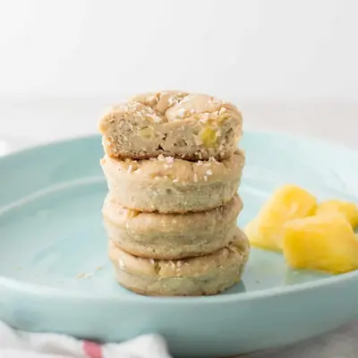

Pineapple Coconut Muffins

Ingredients
- 1 cup (100g) rolled oats
- 1 medium (138g) ripe banana
- 6 ounces (3/4 cup) whole fat plain Greek yogurt
- 1 large egg
- 1 teaspoon vanilla extract
- 1 1/2 teaspoons baking powder, aluminum-free
- 3/4 cup (126g) finely chopped pineapple (see note)
- 1/2 cup unsweetened shredded coconut + more for topping
Steps
- Preheat oven to 350 degrees Fahrenheit.
- In the blender or food processor, add the oats first and then the rest of the ingredients minus the pineapple and coconut. Blend until smooth. Stir in the last two ingredients. Be sure to drain out as much liquid from the pineapple if using canned or frozen
- Pour batter evenly into a greased or lined 12-cup muffin pan. Top with remaining more coconut, if you wish.
- Bake for 25-30 minutes, until inserted toothpick comes out clean. Cool completely (wait at least 10 minutes) before taking them out of the pan.
Recipe by Min Kwon · Kidfriendly Meals, from MJ and Hungryman. Saved here for personal use; the original has the full notes, tips and photos. Open original